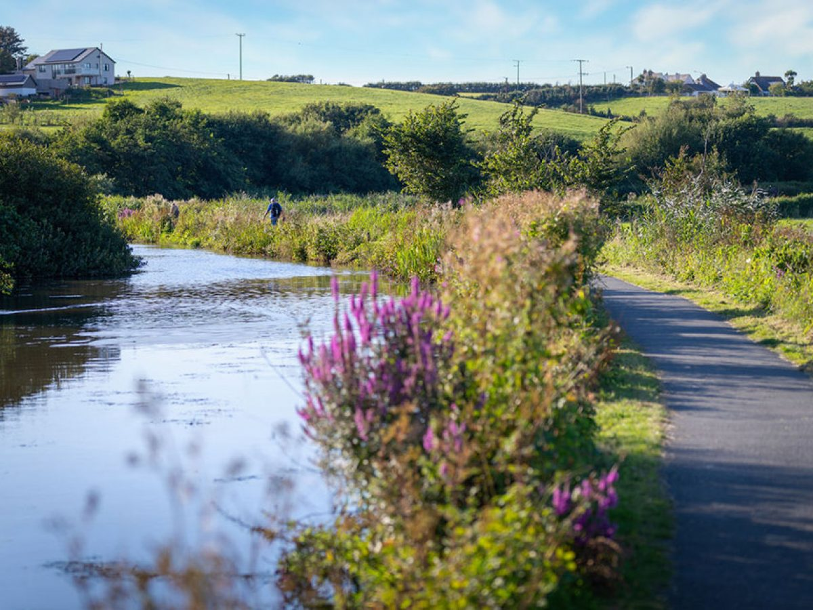

Local Area Guide · Bude & North Cornwall
We've been here a long time. This is what we actually recommend — beaches, walks, places to eat, things for rainy days, and spots where dogs are genuinely welcome.
The Guide
Filter by what you're looking for. These are genuine recommendations — places our team uses and guests return to year after year.
3.2 miles · 10 min drive
A National Trust beach in a dramatic cove with a café above. One of the best dog-friendly beaches on the North Cornwall coast — no dog restrictions, year-round. The walk down the valley to reach it is worth it.
Dogs: welcome all year · Parking: NT car park above
2.5 miles · 8 min drive
Bude's most popular surf beach — a wide, flat expanse facing the Atlantic. South section has seasonal dog restrictions (May–September), but the north end and surrounding headland walks remain open to dogs all year.
Dogs: north end year-round · south section: Oct–Apr only · Surf hire: available on beach
5.8 miles · 14 min drive
A secluded NT cove at the end of the Coombe Valley — a place only those who know the area find. No seasonal restrictions, no café, no lifeguard. Just a beautiful wild beach. Walk the valley from the car park.
Dogs: welcome all year · No facilities · Narrow lane access
2.2 miles · 7 min drive
Bude's town beach — right by the famous Bude Sea Pool, one of the few tidal swimming pools left in England. Best for swimming and the unique pool experience. Dogs not permitted May–September between 10am–6pm.
Dogs: Oct–Apr only (main beach) · Bude Sea Pool: adjacent, free entry · Town access on foot
7.4 miles · 18 min drive
One of the most dramatically beautiful coves on the North Cornwall coast. The surrounding cliff walk is exceptional. Small village with a pub. Dog-friendly with no seasonal restrictions on the beach itself.
Dogs: welcome all year · Pub in village: The Coombe Barton
3.0 miles · 9 min drive
Bude's second main surf beach — a little rougher and more local in feel than Widemouth. Hosts surfing championships. North end is dog-friendly year-round. Good surf school access and beach café.
Dogs: north end year-round · Surf school: available · Café on beach
2.5 miles · 8 min drive
One of the longest-established surf schools on the North Cornwall coast. Lessons for complete beginners through to improvers — two-hour sessions, boards and wetsuits provided. On Widemouth Bay.
Book in advance in summer · All equipment included · Minimum age: 7
2.2 miles · 7 min drive
A Grade II listed tidal seawater pool cut into the rocks beside Summerleaze Beach — one of the largest in England. Free entry, fills naturally with each tide, and cleaned daily. Swimmers only — no lanes, no fuss.
Free entry · Open daily · No lifeguard · Dogs not admitted in pool area
From estate gate
The SWCP connects directly from the Whalesborough estate. Walk north to Bude (6 miles round trip) or south toward Crackington Haven through dramatic cliff scenery. One of the most spectacular stretches of the path in Cornwall.
OS Map: Explorer 111 · Dogs: on lead near livestock · Starts from estate
From estate · Adjacent
The historic Bude Canal runs adjacent to the estate. A flat, traffic-free walk or cycle path connecting Whalesborough to Bude town centre (3 miles, one way). Good for families with young children, pushchairs, and dogs. Passes the weir and aqueduct.
Flat and surfaced · Dogs: welcome · Connects to Bude town centre
5.8 miles · 14 min drive
A National Trust valley walk leading down to Duckpool Beach. Ancient woodland, rare lichen, and an unusually sheltered microclimate that makes it feel far wilder than it is. One of the quietest walks near Bude.
Dogs: welcome · NT car park at top · 1.5 miles to beach
14 miles · 22 min drive
Cornwall's highest ground. Rough Tor and Brown Willy offer open moorland walking with wide views on clear days — and atmospheric cloud-bound drama on others. Easy car park access at Rough Tor car park near Camelford.
Dogs: welcome · Open moorland · OS Map: Explorer 109 · Approx 4 miles return
On-site · Whalesborough Estate
Breakfast and lunch daily. Dinner Thursday–Saturday. 90% Cornish sourcing, 30% from the estate. Lakeside terrace. Whalesborough cheese, Phillip Warren beef, Celtic Fish day-boat catches. No need to leave the estate.
Open: 9am–5pm daily · Evening: Thu–Sat · Dogs: welcome on terrace · Book ahead for dinner
1.8 miles · 5 min drive
A classic Devon/Cornwall border pub with honest food, local ales, and a proper welcome for walkers and dogs. Good for an evening out when you want pub rather than restaurant.
Dogs: welcome · Food served lunches and evenings
2.2 miles · 7 min drive
Bude has a good independent food scene for a small town. The Life's a Beach café is the most well-known (spectacular sea views). Bude Food Company for deli/lunch. Several good independent cafés along The Strand.
Life's a Beach: canal-side, evening meals in season · Booking recommended in summer
7.4 miles · 18 min drive
A proper Cornish pub in one of the most beautiful coastal villages on the north coast. Dog-friendly bar, good crab sandwiches, ales, and the cliffs on the doorstep. Park in the village and walk down.
Dogs: welcome in bar · Food lunches and evenings · Arrive early in summer
On-site · Whalesborough Estate
When it rains in Cornwall (it will), the W Club Spa is the answer. Indoor infinity pool, outdoor pool, sauna, steam room, Technogym gym, and Gaia treatment rooms — all included with your cottage stay. Book a treatment in advance.
Included with stay · Treatments: book ahead · Dogs: not in spa · Open daily
35 miles · 55 min drive
The world's largest indoor rainforest. Cornwall's most famous attraction is genuinely worth the drive on a wet day. The biomes are spectacular regardless of what the weather outside is doing. Book tickets online.
Book online in advance · Dogs: not permitted indoors · Full day experience
28 miles · 45 min drive
Tintagel is spectacular in all weathers — arguably more atmospheric in the rain. The castle ruins, the Merlin's Cave at beach level, and the new footbridge across the chasm are genuinely dramatic. Allow 2–3 hours. The village has good food stops.
English Heritage admission · Dogs: welcome outdoors · Café on site · Steep steps
2.2 miles · 7 min drive
Bude's local history museum in a small Regency castle on the seafront. Free entry. Covers the story of the Bude Canal, local wrecks, and the town's unusual history as an agricultural canal port. Good for an hour when the rain sets in.
Free entry · Dogs: not admitted · Open daily (seasonal hours)
35 miles · 50 min drive
The ancient capital of Cornwall. Launceston Castle (English Heritage) has remarkable views even in poor weather. The town has independent shops, cafés, and a covered market. Dogs welcome in the castle grounds. Good half-day trip.
English Heritage admission · Dogs: welcome in grounds · Town centre nearby
On-site · Whalesborough Estate
Whalesborough's 450-acre estate has a network of private farm tracks and footpaths you can explore from your cottage door. Through woodland, along field margins, past the market garden and the lake. An hour of walking without leaving the estate is genuinely possible.
Dogs: welcome · Lead near livestock · Free for all guests
On-site · Whalesborough Estate
One of the few places in North Cornwall with a purpose-built heated dog wash. After a day on the beach or the coastal path, your dog comes back clean and warm. Included with all dog-friendly cottage stays.
Included with stay · Open daily · Shampoo provided
Dog-Friendly Beach Guide
Cornwall's dog restrictions vary by beach and season. This is what you actually need to know for the beaches closest to Whalesborough.
| Beach | Distance | Dogs | Notes |
|---|---|---|---|
| Sandymouth | 3.2 mi | Year-round | NT beach, no restrictions. Café above the beach. |
| Duckpool | 5.8 mi | Year-round | Remote NT cove. Wild, no facilities. Walk from Coombe Valley. |
| Northcott Mouth | 3.5 mi | Year-round | Quiet, off the beaten track. Popular with dog walkers. Steep descent. |
| Crooklets (north end) | 3.0 mi | Year-round | North section only. Main beach: May–Sep 10am–6pm restricted. |
| Widemouth Bay (north) | 2.5 mi | Year-round (north) | North end and headland free. South section: May–Sep restricted. |
| Crackington Haven | 7.4 mi | Year-round | Small cove, no seasonal restrictions. Pub in village. |
| Black Rock, Widemouth | 2.8 mi | Year-round | Rocky section north of Widemouth, accessible at low tide. |
| Summerleaze, Bude | 2.2 mi | Oct–Apr only | Town beach. Seasonal restrictions. Sea Pool adjacent (no dogs in pool). |
| Widemouth Bay (south) | 3.0 mi | Oct–Apr only | Main surf section. May–Sep restricted 10am–6pm. |
On Foot
From the estate gate, pick up the South West Coast Path heading north. Follow the cliff edge to Widemouth Bay, then up past Crooklets and into Bude. Return on the canal towpath — flat and traffic-free. A complete circular walk with two very different landscapes.
Follow the Bude Canal from the estate boundary all the way into Bude town centre. Flat, surfaced, and suitable for pushchairs and cyclists. Passes the weir, the old lock, and several picnic spots. Return by the same route or taxi back.
Park at Crackington Haven and walk south along the SWCP toward Cambeak headland. Some of the most dramatic cliff scenery in Cornwall — towering dark rock, Atlantic views, and absolute solitude out of season. Return to the pub when done.
Park at the NT car park above Coombe Valley and walk down through ancient woodland to Duckpool — one of the most secluded beaches on the North Cornwall coast. The valley is a nature reserve with rare species. Steep toward the bottom.
Further Afield
Tintagel Castle
28 miles · 45 min
King Arthur's legendary birthplace. Dramatic cliff ruins, Merlin's Cave, and a spectacular new footbridge. Dogs welcome outside. English Heritage.
Port Isaac
35 miles · 55 min
The village used for Doc Martin filming. A real working fishing village — tiny streets, fresh fish, and Outlaw's Fish Kitchen if you book ahead. Worth an afternoon.
Padstow
45 miles · 70 min
Rick Stein country — restaurants, a good food market, and a ferry to Rock across the estuary. The Camel Trail cycle route starts here. Busy in summer; go early.
The Eden Project
55 miles · 80 min
Best on a wet day — the biomes are spectacular indoors. Book tickets online before you go. Full day out. No dogs inside.
Book your stay
26 five-star cottages, a spa, a restaurant, and the South West Coast Path from the gate. 2.5 miles from Bude beach.